Tutorial: Linear buckling analysis
Use buckling analysis to determine the load value at which a cane starts to deform before breaking. The study parameters used in this tutorial are:
Linear buckling studies require a standard or advanced simulation license.
-
Study type=Linear Buckling
-
Load type=Force
-
Constraint type=Fixed
-
Mesh type=Tetrahedral
-
Open the file FE_Cane.par.
Simulation models are delivered in the \Program Files\Siemens\Solid Edge 2023\Training\Simulation folder.
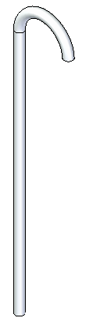
-
Create a linear buckling study.
-
Select Simulation tab→Study group→New Study.

-
Choose the Linear Buckling study type and Tetrahedral mesh type.
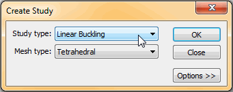
-
Click OK.
Note:The new study is listed in the Simulation pane.
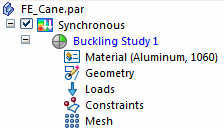
-
-
Define a force load.
-
Select Simulation tab→Structural Loads group→Force.

-
Select the curved face on the handle.
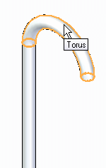
-
Select the origin of the directional arrow.
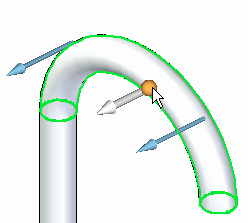
The force directional steering wheel is displayed.
-
Drag its origin to the circular edge on the bottom of the cane handle.
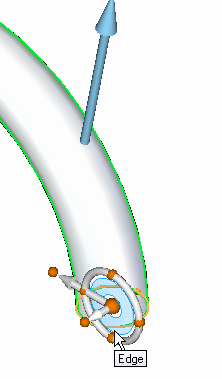
-
Select the bottom cardinal point on the steering wheel to reorient the primary axis such that it points down.
See Reorient the steering wheel for help.
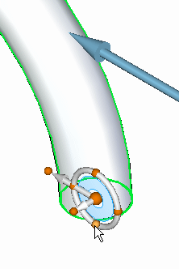
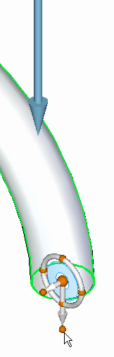
-
In the Value box, type 667 N (150 pounds-force).
Press Enter to accept.
The force is placed.
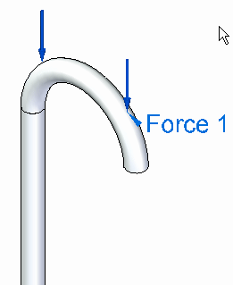
-
-
Add a fixed constraint to the base.
-
Choose Simulation tab→Constraints group→Fixed.

-
Select the planar face on the bottom and accept it.
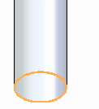
You can see the finished constraint on the model.
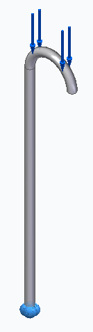
-
-
Turn off loads and constraints in the Simulation pane.
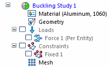
-
Mesh the part and solve the study.
-
Select the Mesh command.
-
Change the Subjective mesh size to 8, and then click Mesh & Solve.
After a few moments, the entire part is meshed.
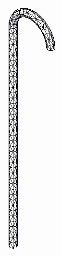
The Simulation Results environment is displayed automatically when processing is complete.
-
-
Review the results.
-
Select the Home tab→Show group→Display Options command.

-
Select the Contour, Deformation, and Color Bar check boxes.
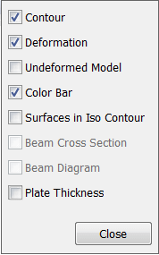
-
These results are for the Mode 1 Eigenvalue. You can see this in the Home tab→Data selection group.
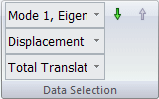
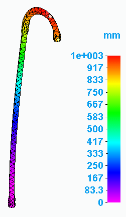
-
Within the menu, you can read the entire Eigenvalue.

-
-
View results for different modes.
-
From the Home tab→Data Selection group→Result Mode list, select Mode 2.
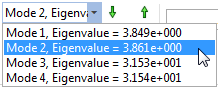
-
From the Result Type list, select Displacement.
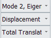
The results change.
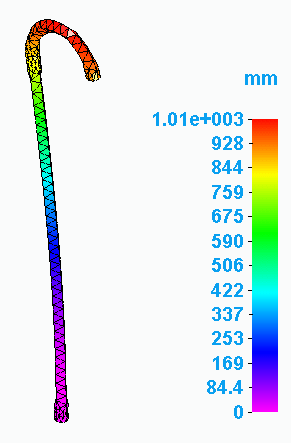
-
Repeat for the remaining two modes.
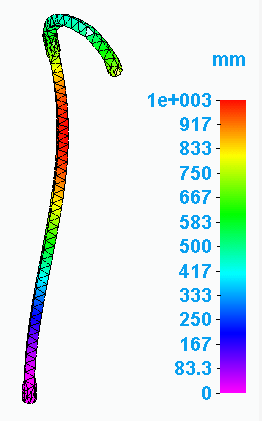
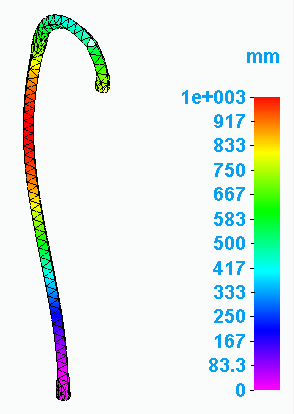
-
-
Animate the modes.
-
In the Home tab→Data selection group, change the Result Mode back to Mode 1.
-
Select Animate.

The Animate command bar is displayed. The modal results begin animating the cane.
-
Click Pause.
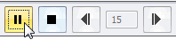
-
In the Properties group on the Animate command bar, select the Animate Across Modes button
 .
. -
Click Play.
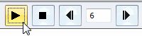
-
When you are finished viewing the animation, click Close.
-
-
Save and close this file.